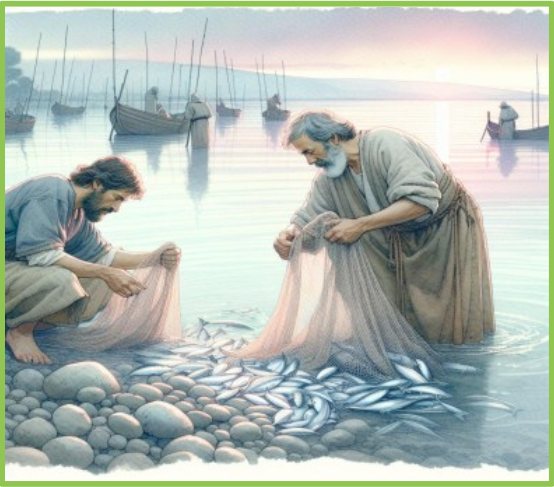
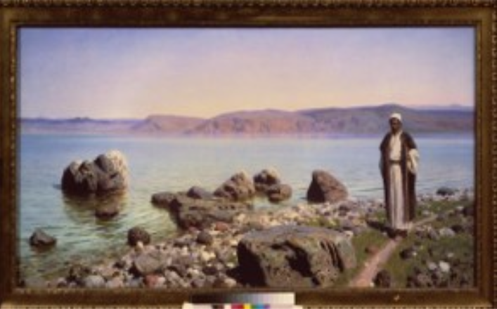
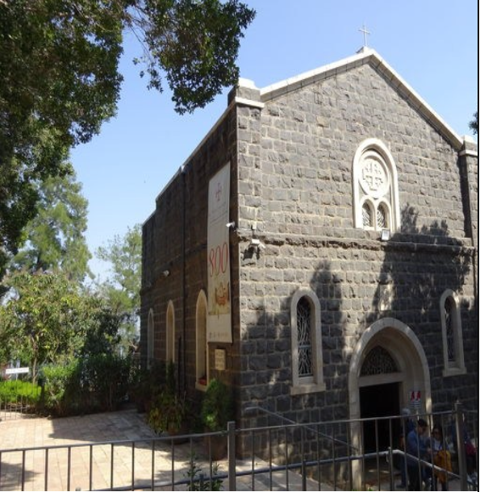
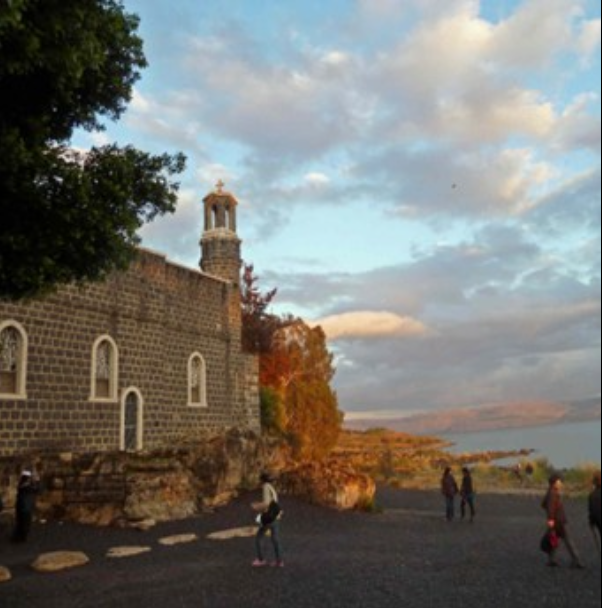
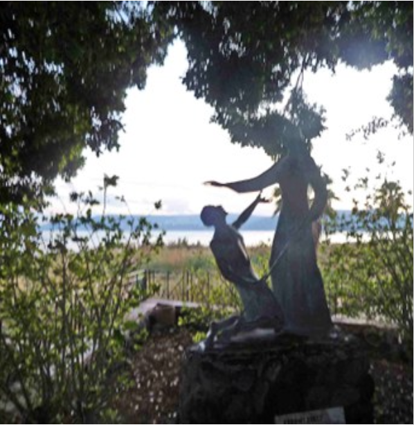

イエス時代のガリラヤ湖は、静かな湖面と周囲の丘陵、そして小さな漁村が織りなす素朴な世界であった。
朝になれば漁師たちの舟が湖に浮かび、夕暮れには岸辺で網を洗う人々の姿が見られた。
湖は海抜マイナス二百メートルを超える谷底にあり、周囲を丘陵に囲まれている。
そのため時に激しい突風が吹き下ろし、湖は突然荒れ狂うことがあった。
イエスが活動したカフェナウムやベトサイダも、この湖畔に並ぶ小さな漁村であった。
ガリラヤ湖の朝、網を洗う一人の漁師がいた。
人は、どのようにして変えられていくのだろうか。
失敗を重ね、弱さを抱えながらも、なお新しくされていくことは可能なのだろうか。
新約聖書に登場するペトロは、その問いに一つの答えを示す人物である。
彼はガリラヤ湖のほとりで生きる一人の漁師であった。情熱的で率直である一方、衝動的で不安定な面も持ち合わせていた。
彼はイエスに従いながらも、しばしばその言葉を理解できず、時に思い違いをし、ついには「自分は決して裏切らない」と言いながら、イエスを知らないと三度も否認してしまう。
しかし、そのようなペトロが、やがて初代教会を導く中心的な人物へと変えられていく。
そこには、単なる人間的成長では説明できない、キリストとの出会いによる深い変容の歩みがあった。
本書は、このペトロの生涯を、福音書および使徒言行録、さらに彼の手紙に基づいてたどるものである。
ただし本書は、単に出来事を整理するだけでなく、その背後にある心の動きにも目を向ける。そして、「主によって造り変えられていく人間の物語」となっている。
各章は、「史実に基づく記述」と「黙想的再構成」 という二つの層によって構成されている。前者は聖書本文に忠実に出来事を整理し、後者はその出来事の中で人の内面に何が起こっていたのかを静かに描き出す試みである。
ペトロの歩みは、一直線の成功の物語ではない。
むしろ、迷い、躓き、崩れ、そして再び立ち上がる歩みである。
だからこそ、その姿は遠い昔の人物のものではなく、今日を生きる私たち自身の姿とも重なり合う。
すべては、ガリラヤ湖のほとりで、イエスと一人の漁師が出会ったところから始まった。



上記写真は、筆者が2011年1月8日に訪れた時に撮影した写真である。
ガリラヤ湖畔にひっそりと建っている、こじんまりとした教会であるが、教会のまわりに木が生い茂っていて、全体像を写すことが難しい。
右端の写真は、教会の前にある、「イエスと使徒ペトロの銅像」である。
イエスより天国の鍵を預かる時の像である。
この教会は、フランチェスコ修道会が管理しているそうだ。